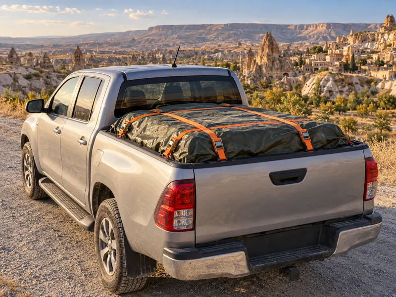

Trafik ve ÇevreKonu 13 / 1736 çıkmış soru
Yük ve yolcu taşıma, araç çekme
Araçların yüklenmesi, kamyon ve kamyonet kasasında yolcu taşıma, römork kullanımı, arızalı aracın çekilmesi, emniyet kemeri, koruma başlığı ve çocuk koltuğu kuralları ile ticari şoförlerin araç kullanma ve dinlenme sürelerini anlatır.

1Konu anlatımı
Akılda kalsın
- Gabari, aracın yüklü veya yüksüz güvenle seyredebilmesi için belirlenen azami uzunluk, genişlik ve yükseklik ölçüleridir; aşılması yasaktır.
- Taşınan yükün üzerine veya araç dışına yolcu bindirilemez; yükle birlikte taşınan yolcular kasada ayrılmış yerde oturtulur.
- Çeken ve çekilen araç arasındaki açıklık en fazla 5 metredir; açıklık 2,5 metreyi geçerse bağlantının ortasına gündüz kırmızı yansıtıcı veya 20x20 cm kırmızı bez asılır.
- Servis freni bozuk araç yalnızca çeki demiriyle çekilir ve hız saatte 15 kilometreyi geçemez.
- Emniyet kemeri şehir içinde ve şehir dışında zorunludur; kazayı önlemez ama ölüm ve ağır yaralanma riskini azaltır.
- Motosiklet, motorlu bisiklet ve elektrikli bisiklet sürücüleri koruma başlığı ve koruma gözlüğü kullanmak zorundadır.
- Ticari şoförler 24 saatte toplam 9 saatten, aralıksız 4,5 saatten fazla araç süremez; 4,5 saatin sonunda en az 45 dakika mola verilir.
Araçların yüklenmesi
Araçlar, karayolu yapısına zarar vermeyecek ve trafik güvenliğini bozmayacak şekilde yüklenir. Bu konuda üç temel ölçü bilinmelidir:
- Gabari: Araçların yüklü veya yüksüz olarak karayolunda güvenle seyredebilmesi için belirlenen azami uzunluk, genişlik ve yükseklik ölçüleri.
- Taşıma sınırı: Aracın taşıyabileceği en fazla yük ve yolcu miktarı.
- Dingil ağırlığı: Bir dingilin yola aktarabileceği en fazla ağırlık.
Yüklemede şunlar yasaktır:
- Gabariyi, taşıma sınırını, azami yüklü ağırlığı veya dingil ağırlıklarını aşmak,
- Yükü yola düşecek, dökülecek, sızacak, kayacak ya da aracın dengesini bozacak şekilde, bağlamadan yüklemek,
- Sürücünün görüşünü engelleyecek veya plakaları, dur ve dönüş lambalarını, yansıtıcıları örtecek şekilde yüklemek,
- Taşınan yükün üzerine veya araç dışına (çamurluk, basamak, araç üstü gibi) yolcu bindirmek,
- Tehlikeli maddeleri gerekli izin ve önlemler alınmadan taşımak.
Tehlikeli madde taşıyan araçlarda yangın söndürme cihazı, yangın anında hemen kullanılabilmesi için görülebilen ve erişilmesi kolay bir yerde bulundurulur.
Kamyon, kamyonet ve römorklarda yolcu taşıma
Bu araçlarda yük üzerinde insan taşımak yasaktır. Yükle birlikte yolcu taşınacaksa yükler sağlam şekilde yerleştirilip bağlanır, kasanın yan ve arka kapakları kapalı olur ve yolcular kasa içinde kendilerine ayrılan bir yerde oturtulur.
Kısa mesafede işçi taşırken kasanın yan ve arka kapaklarının 90 cm yükseklikte sağlam biçimde kapalı olması ve kasa zemininden en az 120 cm yükseklikte tutunma korkuluğu bulunması zorunludur. Bu araçların üstünün kapalı olması zorunlu değildir.
Römork takma
Araca römork bağlandığında römorkun elektrik bağlantısı prize takılır; römork çeken aracın arka lambalarını kapattığından römorkun stop, sinyal ve arka lambaları çalışır durumda olmalıdır. B, C, C1, D ve D1 sınıfı belge sahipleri azami yüklü ağırlığı 750 kilograma kadar olan hafif römork takabilir.
Arızalı aracın çekilmesi
Çekilmesi gereken araçlar normalde kurtarıcıyla taşınır. Arızalı araç başka bir araçla en yakın onarım yerine kadar ancak şu şartlarla çekilebilir:
- Çekilen aracın ağırlığı, çeken aracın taşıma sınırını aşmamalı ve çekilen araç bir sürücünün yönetiminde olmalıdır.
- Her iki araç boş olmalı; sürücüler ve gerekirse birer yardımcı dışında yük veya yolcu taşınmamalıdır.
- Araçlar kopmayacak şekilde çelik çubuk, çelik halat veya zincirle bağlanmalı, aralarındaki açıklık 5 metreyi geçmemelidir.
- Açıklık 2,5 metreden fazlaysa bağlantının ortasına gündüz kırmızı yansıtıcı veya 20x20 cm kırmızı bez, gece kırmızı ışık veya kırmızı yansıtıcı konur. Çekilen aracın ışıkları bozuksa aynı işaret aracın arkasına da konur.
- Servis freni bozuk araç, iki aracın birbirine yaklaşmasını önleyen çeki demiriyle çekilir; açıklık en fazla 1 metre, hız en fazla 15 km/s olur. Diğer çekme hâllerinde hız 20 km/s'yi geçemez.
Emniyet kemeri
Emniyet kemeri bulunan araçlarda kemer takmak şehir içinde de şehir dışında da zorunludur. Kemer kazayı önlemez; çarpma anında kişinin araç içinde savrulmasını, başını ön panele veya cama çarpmasını ve araçtan dışarı fırlamasını engeller. Çarpmanın etkisini göğüs kafesi ve leğen kemiği gibi vücudun daha dayanıklı bölgelerine dağıtarak başta baş ve göğüs olmak üzere ölüm ve ağır yaralanma riskini azaltır.
Koruma başlığı ve çocukların taşınması
Motosiklette emniyet kemeri yoktur. Motosiklet, motorlu bisiklet, bisiklet ve elektrikli bisiklet sürücüleri koruma başlığı (kask) ve koruma gözlüğü kullanmak zorundadır; kaskta koruyucu vizör varsa ve bisiklette gözlük aranmaz. Yolcular da kask takar; motosiklet sürücüsü ve yolcusu ayrıca koruyucu eldiven kullanır.
- Boyu 150 cm'den kısa ve 36 kg'ın altındaki çocuklar, ağırlıklarına uygun çocuk bağlama sistemiyle taşınır. Boyu 135 cm'yi aşan çocuklar ön koltuk dışındaki koltuklarda emniyet kemerini kullanabilir.
- Çocuk bağlama sistemi olmayan otomobillerde üç yaşın altındaki çocuklar taşınamaz.
- Ön hava yastığı devre dışı bırakılmadan ön koltukta arkaya dönük çocuk koltuğu kullanılamaz.
Ticari şoförlerin çalışma süreleri
Ticari amaçla yük taşıyan ve azami ağırlığı 3,5 tonu geçen araçların şoförleri ile ticari amaçla yolcu taşıyan ve kapasitesi şoför dâhil 9 kişiyi geçen araçların şoförleri için:
| Kural | Süre |
|---|---|
| 24 saat içinde toplam araç kullanma | En fazla 9 saat |
| Aralıksız araç kullanma | En fazla 4,5 saat |
| 4,5 saatin sonunda dinlenmeye çekilmiyorsa mola | En az 45 dakika (en az 15 dakikalık bölümler hâlinde de kullanılabilir) |
| Günlük kesintisiz dinlenme | 24 saatte 11 saat |
Bu kurallar yorgunluğa bağlı kazaları önlemek içindir ve takograf kayıtlarıyla denetlenir.
Kış lastiği
Şehirler arası yük ve yolcu taşıyan ticari araçlarda kış lastiği, iklim şartlarına göre Ulaştırma ve Altyapı Bakanlığının (yetki devrederse valiliklerin) belirlediği kış döneminde zorunludur. Bu dönem uzun yıllar 1 Aralık – 1 Nisan olarak uygulanmış, 2025–2026 kışında 15 Kasım – 15 Nisan olarak belirlenmiştir.
2Bu konunun soruları
MEB sınavlarında bu konudan çıkmış 36 soru (2 tanesi en az üç sınavda soruldu). Her soruda doğru cevabı ve açıklamasını hemen görürsünüz.
Hangi sorular?
Sıralama